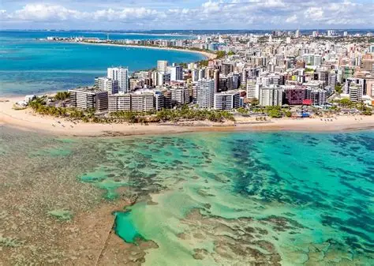
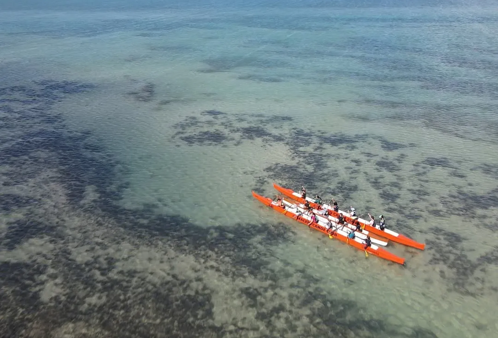
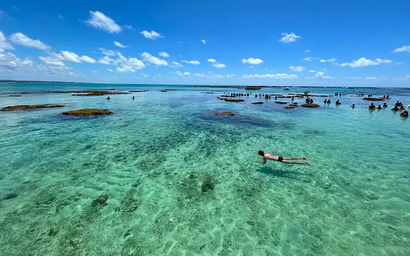
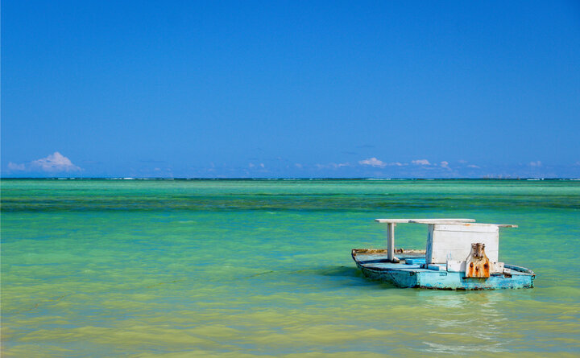

Viva uma experiência única no Maceió Canoe Club e explore as águas cristalinas de Maceió em um inesquecível passeio de canoa havaiana. Com roteiros para as piscinas naturais de Pajuçara, nascer e pôr do sol, a experiência combina aventura, contato com a natureza e paisagens paradisíacas do litoral alagoano. Ideal para quem busca momentos relaxantes e cheios de emoção no mar.
Saiba mais
Localizada no coração da Costa dos Corais, Maragogi é famosa pelas piscinas naturais de águas cristalinas, perfeitas pra mergulhar com peixinhos coloridos.
Pra aproveitar esse destino, só vá na maré baixa e agende seu passeio antecipadamente pra garantir o melhor horário. Leve snorkel ou alugue por lá mesmo.
Ah, e não esqueça o protetor solar (seguro para os corais), porque o sol alagoano não brinca em serviço!
Saiba maisVisite o Parque Memorial Quilombo dos Palmares, na Serra da Barriga, e mergulhe na história de resistência do maior quilombo das Américas. O local recria construções típicas, como ocas e casas de farinha, e oferece mirantes com vistas deslumbrantes. Desfrute da culinária afro-brasileira no restaurante Kúuku-Wáana e participe de manifestações culturais no Batucajé
Saiba mais
Localizado na famosa Costa dos Corais, São Miguel dos Milagres é a pedida certa para quem gosta de lugares tranquilos e rústicos já que o local não abriga grandes redes de hotéis ou lugares badalados. Morada de pescadores jangadeiros, Milagres encanta por sua simplicidade e beleza.
A pequena cidade recebeu esse nome por conta de uma estátua de madeira de São Miguel Arcanjo que foi encontrada por um pescador e o curou de um problema de saúde. O passeio de Jangada é a principal atração de São Miguel dos Milagres já que eles levam os turistas às famosas Piscinas Naturais. Distantes a 1,5 km da costa, elas proporcionam aos turistas a experiência de mergulhar em meio aos corais e peixinhos coloridos – sem contar que formam uma verdadeira piscina infinita.
Saiba mais